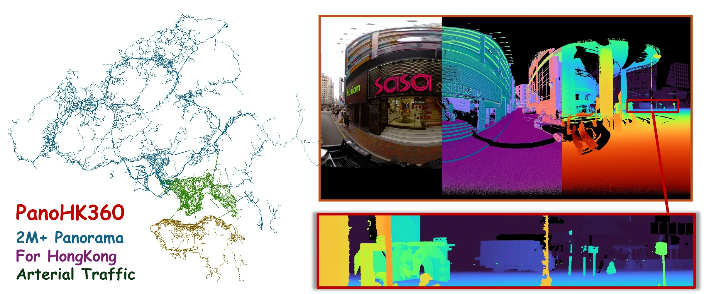

Abstract
Panoramic 360° depth estimation underpins autonomous navigation, 3D scene reconstruction, and scene understanding. However, existing outdoor panoramic datasets remain limited in three aspects. Small-scale collections are insufficient for modern data-hungry architectures and tend to produce models that generalize poorly across cities. Synthetic datasets transfer poorly to real scenes due to persistent domain gaps in illumination, geometry, and material appearance. Pseudo-label datasets distilled from pretrained estimators inherit the errors of the teacher model. Their downstream accuracy is therefore capped at the performance ceiling of the teacher itself. To address these issues, we present PanoHK360, a city-scale outdoor panoramic RGB-D dataset of diverse urban scenes in Hong Kong. The data are collected by a vehicle-mounted rig that pairs 8K panoramic imaging with survey-grade LiDAR. To the best of our knowledge, PanoHK360 is the first panoramic depth dataset that simultaneously combines three defining properties: city-scale geographic coverage, 8K equirectangular resolution, and sensor-based metric depth. The depth is recovered directly from LiDAR rather than estimated by a pretrained network. The release further includes raw point clouds, 6-DoF camera poses, and temporal capture sequences. We further benchmark representative monocular 360° depth methods on PanoHK360 under a unified protocol with a location-disjoint training and validation split. The results reveal a substantial gap between current methods and the level of resolution and scene diversity required for real-world urban deployment. These findings establish PanoHK360 as a challenging testbed for future research.
Dataset
PanoHK360 is a city-scale outdoor panoramic RGB-D dataset captured across diverse urban environments in Hong Kong. It pairs approximately 2 million equirectangular RGB frames at 8000 × 4000 resolution with survey-grade LiDAR metric depth. The release further includes surface normals, raw point clouds, 6-DoF camera poses, and temporal capture sequences.
PanoHK360-Mini is a curated benchmark of 22,751 panoramic frames: 21,352 training frames and 1,399 validation frames. A location-disjoint split across ten geographically distinct locations tests generalization to unseen urban layouts and illumination conditions. Representative monocular 360° depth estimation methods are evaluated under a unified protocol.

Citation and Attribution
If you use this work or the dataset, please cite:
@inproceedings{panohk3602026,
author = {Yunxiao Chen and Honghuan Lin and Ruisheng Wang and Yujun Liu and Kun Zhou and Shangfeng Huang and Tsz Nam Chan},
title = {{PanoHK360}: A Large-Scale 8K Urban Panoramic Dataset and Benchmark for Depth Estimation},
booktitle = {Advances in Neural Information Processing Systems},
year = {2026},
url = {https://neurips.cc/virtual/2026/poster/139447}
}